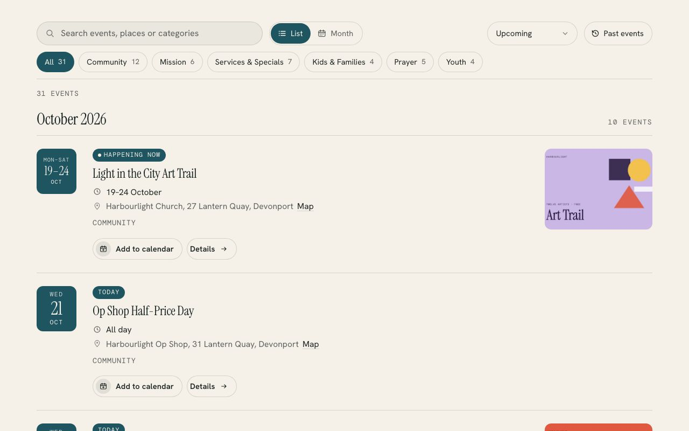

Churches, charities and community groups · A Squarespace plugin
Events Explorer
Your Squarespace events with filters, a month calendar, maps and add to calendar. Turns the events page you already have into a list grouped by month and a month calendar, with category filters, search and maps. Every event gets an Add to calendar button, and every time stays in your own time zone.
One payment · Squarespace 7.0 and 7.1 · Help by email

Live demo
Try it on a church that doesn’t exist.
Harbourlight is made up, but the plugin is the real thing, running the way it would on your site. Switch the section colours to see it take on a different look.
On your site it picks up your own fonts, colours and button shape.
A list people can scan
Events sit under month headings with a date tile, the time (9:30 – 11am), the venue and a map link. Today, Tomorrow and Happening now labels show what’s close.
A month calendar
Switch to a calendar with event titles on wide screens and dots on phones. Tap a day and the list below shows just that day. The arrow keys work too.
Filters that count
Category chips show how many events each one holds. Add search, a When filter (this week, this month, the next three months) and a Past events view, newest first.
Add to calendar
Every event has Google Calendar and an .ics file for Apple Calendar and Outlook, made in the visitor’s browser with the right time, place and link.
Times that don’t move
Every time shows in your site’s time zone, with a label such as NZDT for visitors elsewhere. All-day and multi-day events, camps included, read the way you’d say them.
Fits your site
It takes your fonts, colours and button shape, keeps its filter bar under your header as people scroll, and has a setup check at ?events=check that tells you what to fix.
Install
One paste and about ten minutes.
The download includes a step-by-step guide written for whoever looks after your website. Read it before you buy.
Make a page (I’d call it What’s on), add a Code block and paste in the file from the download.
Change /events in the first line to the address of your Squarespace events page.
Save, then open the page with ?events=check on the end to see what it found.
What you need: A Squarespace plan that runs JavaScript (Core, Plus, Advanced, Business or Commerce) and a public Squarespace events page, in the list or calendar layout. Works on 7.0 and 7.1.
Pricing
Paid for once, and yours to keep.
A single payment with every 1.x update included. The unlimited licence is for designers and agencies who build church and charity sites.
Single site
$39USD, once
For one website.
- Use it on every page of one site
- All 1.x updates by email
- Install guide and email help
- Email me if it’s not working on your site
Unlimited sites
$99USD, once
For designers and agencies.
- Use it on as many sites as you build or look after
- Clients keep it when your work ends
- All 1.x updates by email
- Email me if it’s not working on a site
Want all 6? The whole library is US$129 for one site. Prefer it done for you? I’ll install and set up any plugin on your site for US$79, including tagging a first batch of content so it looks full on day one.
See the bundlePrices are in US dollars. Checkout shows your local currency and adds any tax that applies where you are.
Questions
The questions people ask first.
Do I need to change how I enter events?
No. It reads the events page you already keep. Categories turn on the filter chips, and a street address in each event’s location gives it a map link, but nothing else changes.
Does it work with the calendar layout?
Yes. Squarespace only shares one month at a time in that layout, so it loads this month and the five after it, and fetches other months as people move through the calendar or open past events. The list layout is quicker because everything arrives in one request.
What about visitors in other time zones?
Times always show in your site’s own time zone, so a 7pm service reads 7pm everywhere, with a zone label such as NZDT added for visitors whose computers are elsewhere. Online events also show the visitor’s own time.
How do all-day and multi-day events show?
Squarespace has no all-day switch, so an event from 12:00am to 11:59pm shows as All day. Longer events show as a date range, or as Fri 5pm – Sun 2pm for a camp, and draw one bar across the month calendar.
Can I hide past events?
Yes. Add data-past="off" to the line you paste and past events disappear from both the list and the calendar.
Will it slow my site down?
The whole thing is about 34 KB once compressed, and it only loads on the page that shows your events. Your events are remembered in each visitor’s browser, so a return visit shows them at once and checks for changes with a single request.
More plugins